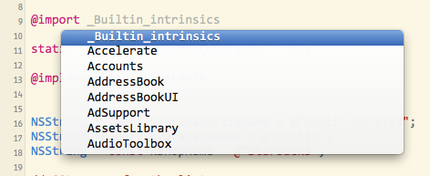
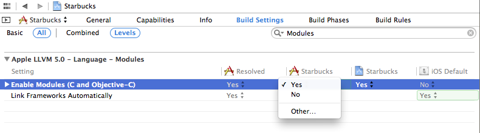

I am playing around with some of the new iOS 7 features and working with some
of the Image Effects as discussed in the WWDC video "Implementing Engaging UI
on iOS". For producing a blur effect within the source code for the session,
UIImage was extended via a category which imports UIKit like so:
I think I saw something about this in another session video but I'm having
trouble finding it. I'm looking for any background information on when to use
this. Can it only be used with Apple frameworks? Are the benefits of using
this compiler directive enough that I should go back and update old code?
Answer
It's a new feature called Modules or "semantic import". There's more info
in the WWDC 2013 videos for Session 205 and 404. It's kind of a better
implementation of the pre-compiled headers. You can use modules with any of
the system frameworks in iOS 7 and Mavericks. Modules are a packaging
together of the framework executable and its headers and are touted as being
safer and more efficient than #import.
One of the big advantages of using @import is that you don't need to add
the framework in the project settings, it's done automatically. That means
that you can skip the step where you click the plus button and search for the
framework (golden toolbox), then move it to the "Frameworks" group. It will
save many developers from the cryptic "Linker error" messages.
You don't actually need to use the@import keyword. If you opt-in to
using modules, all #import and #include directives are mapped to use
@import automatically. That means that you don't have to change your source
code (or the source code of libraries that you download from elsewhere).
Supposedly using modules improves the build performance too, especially if you
haven't been using PCHs well or if your project has many small source files.
Modules are pre-built for most Apple frameworks (UIKit, MapKit, GameKit, etc).
You can use them with frameworks you create yourself: they are created
automatically if you create a Swift framework in Xcode, and you can manually
create a ".modulemap" file yourself for any Apple or 3rd-party library.
You can use code-completion to see the list of available frameworks:

Modules are enabled by default in new projects in Xcode 5. To enable them
in an older project, go into your project build settings, search for "Modules"
and set "Enable Modules" to "YES". The "Link Frameworks" should be "YES" too:

You have to be using Xcode 5 and the iOS 7 or Mavericks SDK, but you can still
release for older OSs (say iOS 4.3 or whatever). Modules don't change how
your code is built or any of the source code.
From the WWDC slides:
- Imports complete semantic description of a framework
- Doesn't need to parse the headers
- Better way to import a framework’s interface
- Loads binary representation
- More flexible than precompiled headers
- Immune to effects of local macro definitions (e.g.
#define readonly
0x01)
- Enabled for new projects by default
To explicitly use modules:
Replace #import <Cocoa/Cocoa.h> with @import Cocoa;
You can also import just one header with this notation:
@import iAd.ADBannerView;
The submodules autocomplete for you in Xcode.
Suggest
Nice answer you can find in book Learning Cocoa with Objective-C (ISBN:
978-1-491-90139-7)
Modules are a new means of including and linking files and libraries into your
projects. To understand how modules work and what benefits they have, it is
important to look back into the history of Objective-C and the #import
statement Whenever you want to include a file for use, you will generally have
some code that looks like this:
Or in the case of frameworks:
#import <SomeLibrary/SomeFile.h>
Because Objective-C is a superset of the C programming language, the #import
state‐ ment is a minor refinement upon C’s #include statement. The #include
statement is very simple; it copies everything it finds in the included file
into your code during compilation. This can sometimes cause significant
problems. For example, imagine you have two header files: SomeFileA.h and
SomeFileB.h; SomeFileA.h includes SomeFileB.h, and SomeFileB.h
includes SomeFileA.h. This creates a loop, and can confuse the coimpiler. To
deal with this, C programmers have to write guards against this type of event
from occurring.
When using #import, you don’t need to worry about this issue or write header
guards to avoid it. However, #import is still just a glorified copy-and-
paste action, causing slow compilation time among a host of other smaller but
still very dangerous issues (such as an included file overriding something you
have declared elsewhere in your own code.)
Modules are an attempt to get around this. They are no longer a copy-and-paste
into source code, but a serialised representation of the included files that
can be imported into your source code only when and where they’re needed. By
using modules, code will generally compile faster, and be safer than using
either #include or #import.
Returning to the previous example of importing a framework:
#import <SomeLibrary/SomeFile.h>
To import this library as a module, the code would be changed to:
This has the added bonus of Xcode linking the SomeLibrary framework into the
project automatically. Modules also allow you to only include the components
you really need into your project. For example, if you want to use the
AwesomeObject component in the AwesomeLibrary framework, normally you would
have to import everything just to use the one piece. However, using modules,
you can just import the specific object you want to use:
@import AwesomeLibrary.AwesomeObject;
For all new projects made in Xcode 5, modules are enabled by default. If you
want to use modules in older projects (and you really should) they will have
to be enabled in the project’s build settings. Once you do that, you can use
both #import and @import statements in your code together without any
concern.